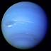

Les Planètes

- 

Le Système Solaire
Découvrez comment est structuré notre système solaire : planètes interne, ceinture d'astéroïdes, planetes externes, ceinture de Kuiper, nuage d'Oort...
Les planètes
Tout savoir sur les planètes du système solaire : Mercure, Vénus, Mars, la Terre, Jupiter, Saturne, Uranus et Neptune
Les planètes naines
Tout savoir sur les planètes naines du système solaire : Cérès, Pluton, Eris, Hauméa et Makémaké